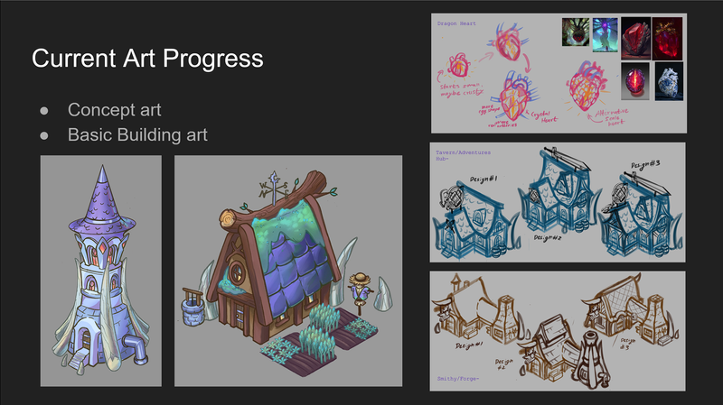

Blog Template
Due to fall break we didn't have any studio meeting this week. Instead our group decided to have our own meeting. The first 30 minutes or so of the meeting we just had Connor and myself present. We used the opportunity to catch him up on how the building system I had made worked and tell him what each script was for. He also showed me some of the UI which he had made, which included a dropdown for editing mode and an option to select which structure to place.
Once Nadav arrived we moved on to talking about non-programming topics. We decided we would meet again later this week to work on the slideshow we would present at the next studio meeting. The R&D groups were to make these presentations to show out progress and direction going further. We also talked about a timeline for art assets and what the requirments would be to be able to properly impliment them in the current system.
Finally, we established what our tasks would be for this week, aside from creating the slideshow. Nadav would begin working on art for the game. We decided the first priority for art should be to create one image for each building type. I would be working on implimenting environmental features such as trees or rocks. I would also be starting on creating a simple economy/resource system. Connor will be working more on UI.
After implimenting the Building System I realized there were some other additions and changes I felt I should make. The first thing I wanted to do was add functions to make interacting with the building from other scripts cleaner and more convenient. I figured making them interact directly with the dictionaries could make the code messier. I added functions like GetBuilding, getBuildingCoords, GetBuildingTiles, and GetBuildingsOfType. I then changed other methods to use these functions where applicable and made functions and properties that other scripts shouldn't be using private.
Another change I wanted to make was to make the highlighting of building white. unfortunately, you can't make the color of tiles brighter by default, as a color white correlates to the original color of the sprite. Instead, I had to create a custom sprite shader that would treat the alpha channel as a brightening factor only when the "None" editing mode was selected using shader keywords. I started off by finding Unity's default sprite shader code online and built off of that. I ran into some issues getting the sprite alpha to work seperatly from the color alpha, but managed to get it working with some trial and error.
Image showing the new white highlighting using the custom sprite shader.
A change Connor suggested in our previous meeting was to make it so the building preview only showed when the cursor was over land. I added the IsGroundTile method for this purpose. I also made it so the placing and deletion of buildings was controled by an event rather than by directly reading the mouse input. This would make it easier to prevent clicks on the UI from accidentally placing or deleting a building in the future.
I finished up my changes by grouping several sections of repeated code into methods such as ColorTile and ClearPreview. I moved the content of the update function into its own method. Finally, I added two new events to represent when the placing of a building or deletion of a building fails, likely to be used for audio effects later on.
The next thing I worked on was a CameraManager script. The goal of this script would be to control the camera with the mouse, allowing the user to navigate the world. I decided that for my ideal implimentation I would need to have three states: one for when the mouse was not being held, one for when it was held but could still end up being either a click or a drag motion, and a final state for when the mouse was held and being dragged. I stored these states in an enumerator.
I implimented the functionality of all three states in their own respective methods. I made it so the camera would move when the mouse was being dragged. I added this such that the mouse would appear to stay in the same world position so that it would feel like the user was actually dragging the world around. This meant the rate of motion would have to scale with the camera size, which required some searching through the Unity documentation to find the right values to use.
Next I made it so that using the scroll wheel would shrink or grow the camera's size. Reading the delta of the scroll wheel was easy, but I noticed the natural behavior of the scroll wheel seems very choppy. Instead, I stored the altered camera size in a seperate variable as a "goal size". The actual size of the camera would approach this value using an exponential decay function, making the process of zooming in and out feel much smoother. Finally, I made it so that the zooming process was centered on the location of the mouse pointer. The exact math to get this to work by changing the position of the camera during zooming took some tinkering but didn't end up being too difficult.
Image of the camera zoomed out and moved from the center.
Next I felt it was best to finish up the resource system. This would make it easier to figure out ideal game mechanics and details of the game economy as we go forwards. I figured I'd start out with just three different Resources: Magic, Wood, Stone. Later we might add population as a "resource" or make certain resources function differently from one another, but for now they would function regularly as a currency.
First I created a Resources struct to store information about resources. Containing all the logic of charging and resource exchanges within the operators of this class would make it much easier to make changes or additions quickly later on. There were several operators I also defined such as the <, >, <=, and >= operators which would effectively compare whether a given value could afford a given cost. There were some opertations that likely wouldn't need to be used, but I implimented them anyways for the sake of functional completeness.
Next I created a ReasourceManager script to be attached to the GameManager. This script would store the user's current resources and interface with the BuildingManager. For this system to work cleanly I made some changes to how the structures and Buildings work. Instead of having the BuildingManager retrieve the building from the GetBuilding function, I made the buildings be components attached to prefabs. This way, the structure could just store a reference to the Building's prefab and be instantiated that way. Once this change was made I had each building have a building cost, which would be checked against the user's resources whenever a building was placed.
To finish off the resource system for now, I created a simple UI which displays the user's current Magic, Stone, and Wood amounts. I created sprites for each UI field, likely to serve as placeholders. I also stole the wood sprite from a previous project of mine. I craeted a simple script which would set the numbers beside each sprite to the user's current amount of its respective resource from the ResourceManager. As of now, it is set to update every frame. I might change this later to wait for an event associated with a change in resources, but for now this is acceptable.
Simple resource UI showing current resource values.
Our R&D team met up several days before the next team meeting. During the next team meeting each group would be expected to create a presentation. This presentation would include progress we've made, what the general idea of the game is, and what we hope to complete within the scope of this semester. We worked on a slideshow that we would present during that meeting. We divided into three sections: design concepts/ideas, art progress and inspirations, and progamming progress and challenges.
Example slide from out presentation
There were several other features that needed to added to the building system. I knew both these features would be quick and easy to add, so I decided to get them out of the way. First, I wanted to make some buildings indestructible. This would be necessary for preventing the player from destroying their main tower or other buildings associated with questing. All I needed to do was add a "canDestroy" property to the buildings which the Building Manager would check for before allowing the destruction of a building.
Next I added a refund for destroying building. This refund adds a configurable portion of a building's cost back to the user's resources when a building is succesfully destroyed. Finally, I wanted the building system to indicate when a building couldn't be afforded. To accomplish this the building preview checks whether the selcted building can be aforded and changes the highlight color accordingly. For now this color is set to orange.
Building Highlghted orange when it is too expensive
As previously mentioned, this meeting would include presentations from each group. This includes both R&D groups and the main project SandCastle group. Our presntation went smoothly and covered most of the information we wanted. We also answered some questions regarding narative and scope, which might mean we should more strongly establish these aspects of our game on our own. The other R&D team is creating a 2.5D PvE sidescroller and project Sandcastle made progress on their enemy spawning system and building/walls.
After the presentations were complete the last 30 minutes of the meeting were dedicated to work time within our groups.
To make the world feel more alive, we'll want characters that can run around in the world. The current plan is to have these characters Be in a chibi and cartoonish artstyle. Regardless, we'd still need some form of pathfinding system for these characters to navigate the world. I wanted the paths of these characters to be mostly centralized to the edges of the hexagon grid, that way they could run between buildings that were adjecent to one-another. That means I would need some way of representing the vertices between the hexagons in a coordinate system. Using the cubic coordinate system out of the box for this wouldn't work as the layout of the vertices was more complex than the haxagons themselves. I realized that each point could be uniquely described as either the top point or the bottom point of a specific hexagon.